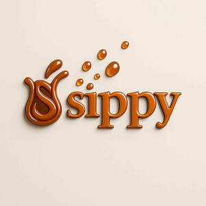

Trade Mark Journal No.2025/040 3 October 2025
UK00004257758 2 September 2025 (17,21,35)

- Class 17
- Silicone rubber; Silicone rubber compositions; Silicone rubber compounds; Flexible hoses of silicone rubber reinforced with fabric; Fluorosilicone rubber elastomers; General purpose silicone rubber sealant; Silicone foam heat shielding; Waterproof membranes of rubber; Foam rubber; Synthetic rubber; Stuffing of rubber or plastic; Grommets made of synthetic rubber; Rubber stoppers; Latex; Plastic seals; Granules of rubber; Waterproof sealants; Corner protectors of rubber; Control line protectors made from natural rubber; Control line protectors made from synthetic rubber.
- Class 21
- Watering cans; Nozzles for watering cans; Bottles; Plastic bottles; Reusable bottles; Reusable plastic water bottles sold empty; Bottle buckets; Drinks containers; Dispensers for liquids for use with bottles; Plastic water bottles; Biodegradable bottles; Glass bottles; Empty water bottles for bicycles; Refrigerating bottles; Bottles (Refrigerating -); Water bottles for bicycles, sold empty; Water bottles sold empty; Bottle coolers; Drinking bottles; Bottles, sold empty; Plastic containers for dispensing drink to pets; Water bottles; Insulated bottles [flasks]; Coolers [non-electric containers]; Squeeze bottles, empty; Sports bottles [empty]; Disposable lids for household containers; Stands for bottles; Water bottles for bicycles; Plastic cups; Glass flasks [containers]; Brushes for feeding bottle teats.
- Class 35
- Business management for shops; Shop retail services connected with carpets; Arranging commercial transactions, for others, via online shops; Business operation of shopping malls; Business operation of shopping centers for others; Retail store services in the field of clothing; Online retail store services relating to clothing; Retail services relating to bakery products; Online retail store services in relation to clothing; Shop window dressings; Retail services in relation to bakery products; Retail services connected with the sale of clothing and clothing accessories; Online retail store services relating to cosmetic and beauty products; Retail services relating to delicatessen products; Advertising of the goods of other vendors, enabling customers to conveniently view and compare the goods of those vendors; Retail services for works of art provided by art galleries; Unmanned retail store services relating to food; Unmanned retail store services relating to drink; Providing online marketplaces for sellers of goods and or services; Product demonstration services in shop windows by live models; Administration of the business affairs of retail stores; Retail services via catalogues related to beer; Business management of restaurants; Business management of wholesale and retail outlets; Marketing services in the field of restaurants; Mail order retail services for clothing accessories; Provision of online marketplaces for buyers and sellers of goods and services which are authenticated by non-fungible tokens.
Mihai Victor Marc
Yesica Soledad Ortiz Molina